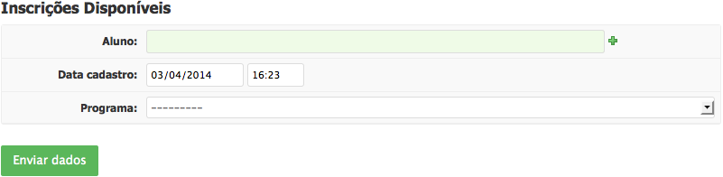
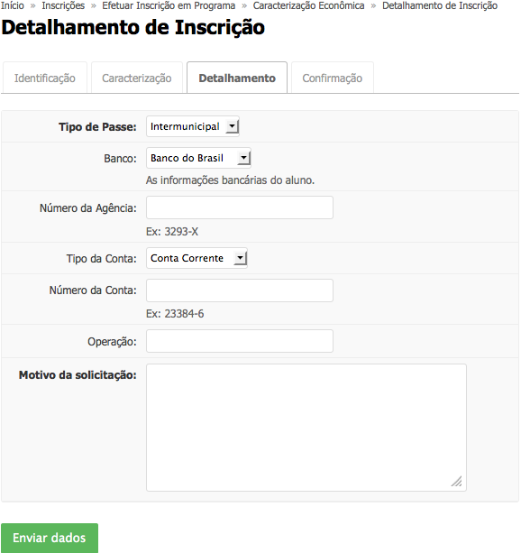

Conteúdo
Permite preencher a Caracterização Socioeconômica e realizar inscrição para os programas do Serviço Social.
Acesse Atividades Estudantis > Serviço Social > Caracterização Socioeconômica ou acesse Meus Dados e clique em Ações > Editar Caracterização
O aluno só pode se inscrever uma vez por programa a cada período de inscrição; caso deseje mudar algum dado, considerando que o período de inscrição esteja aberto, deverá realizar nova inscrição, que substituirá a anterior.
Acesse Atividades Estudantis > Serviço Social > Inscrições
Clique em “Efetuar Inscrição”
Em Identificação (ver tela abaixo), preencha o formulário com os dados necessários: 
Clique em “Enviar Dados”
Em Caracterização, confira os dados do aluno e clique em “Confirmar”
Em Detalhamento (ver tela abaixo), preencha o formulário com os dados necessários: 
Clique em “Enviar Dados”